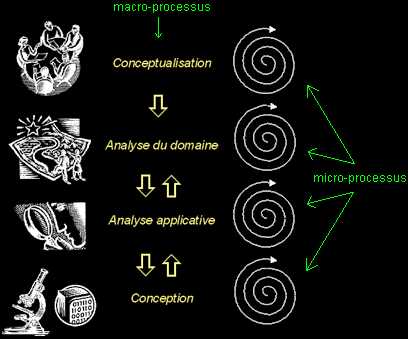

|
|
|
Modéliser avec UML (suite...)
q
Définir une architecture avec UML (détail de la "vue 4+1")
- La vue logique
- Cette vue de haut niveau se concentre sur l'abstraction et l'encapsulation, elle modélise les éléments et mécanismes principaux du système.
- Elle identifie les éléments du domaine, ainsi que les relations et interactions entre ces éléments :
- les éléments du domaine sont liés au(x) métier(s) de l'entreprise,
- ils sont indispensables à la mission du système,
- ils gagnent à être réutilisés (ils représentent un savoir-faire).
- Cette vue organise aussi (selon des critères purement logiques), les éléments du domaine en "catégories" :
- pour répartir les tâches dans les équipes,
- regrouper ce qui peut être générique,
- isoler ce qui est propre à une version donnée, etc...
- La vue des composants
Cette vue de bas niveau (aussi appelée "vue de réalisation"), montre :
- L'allocation des éléments de modélisation dans des modules (fichiers sources, bibliothèques dynamiques, bases de données, exécutables, etc...).
- En d'autres termes, cette vue identifie les modules qui réalisent (physiquement) les classes de la vue logique.
- L'organisation des composants, c'est-à-dire la distribution du code en gestion de configuration, les dépendances entre les composants...
- Les contraintes de développement (bibliothèques externes...).
- La vue des composants montre aussi l'organisation des modules en "sous-systèmes", les interfaces des sous-systèmes et leurs dépendances (avec d'autres sous-systèmes ou modules).
- La vue des processus
Cette vue est très importante dans les environnements multitâches ; elle montre :
- La décomposition du système en terme de processus (tâches).
- Les interactions entre les processus (leur communication).
- La synchronisation et la communication des activités parallèles (threads).
- La vue de déploiement
Cette vue très importante dans les environnements distribués, décrit les ressources matérielles et la répartition du logiciel dans ces ressources :
- La disposition et nature physique des matériels, ainsi que leurs performances.
- L'implantation des modules principaux sur les noeuds du réseau.
- Les exigences en terme de performances (temps de réponse, tolérance aux fautes et pannes...).
- La vue des besoins des utilisateurs
Cette vue (dont le nom exact est "vue des cas d'utilisation"), guide toutes les autres.
- Dessiner le plan (l'architecture) d'un système informatique n'est pas suffisant, il faut le justifier !
- Cette vue définit les besoins des clients du système et centre la définition de l'architecture du système sur la satisfaction (la réalisation) de ces besoins.
- A l'aide de scénarios et de cas d'utilisation, cette vue conduit à la définition d'un modèle d'architecture pertinent et cohérent.
- Cette vue est la "colle" qui unifie les quatre autres vues de l'architecture.
- Elle motive les choix, permet d'identifier les interfaces critiques et force à se concentrer sur les problèmes importants.
q Résumons la démarche...
Modéliser une application ?
Mais comme UML n'est pas un processus...
Quelle démarche utiliser ?
Trouver un "bon" modèle est une tâche difficile mais capitale !
- Optez pour une approche itérative et incrémentale.
- Centrez votre démarche sur l'analyse des besoins des utilisateurs.
- Prenez grand soin à la définition de l'architecture de votre application (l'approche "4+1" permet de mieux la cerner).
OK OK , mais en pratique ?
- Bien qu'UML n'est pas un processus, il facilite une démarche d'analyse itérative et incrémentale, basée sur les niveaux d'abstraction.
- Les niveaux d'abstraction permettent de structurer les modèles.
- Un micro-processus régit les itérations à niveau d'abstraction constant.
- Un macro-processus régit le passage de niveau à niveau.
- Une démarche incrémentale consiste à construire les modèles de spécification et de conception en plusieurs étapes (cible = catégories).
Le schéma ci-dessous montre les niveaux d'abstraction principaux, qu'on peut identifier dans un processus de développement logiciel :

q Elaboration plutôt que transformation
UML opte pour l'élaboration des modèles, plutôt que pour une approche qui impose une barrière stricte entre analyse et conception :
- Les modèles d'analyse et de conception ne diffèrent que par leur niveau de détail, il n'y a pas de différence dans les concepts utilisés.
- UML n'introduit pas d'éléments de modélisation propres à une activité (analyse, conception...) ; le langage reste le même à tous les niveaux d'abstraction.
Cette approche simplificatrice facilite le passage entre les niveaux d'abstraction.
- L'élaboration encourage une approche non linéaire (les "retours en arrière" entre niveaux d'abstraction différents sont facilités).
- La traçabilité entre modèles de niveaux différents est assurée par l'unicité du langage.
|
|
|